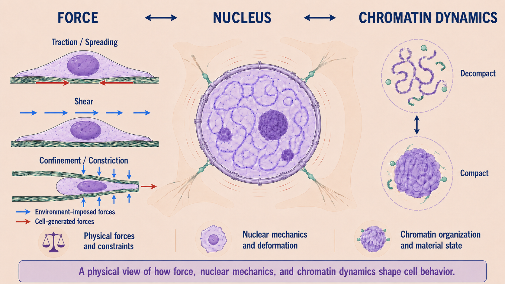

01 · Biological questions
Cellular & Nuclear Biophysics
How chromatin organization, nuclear mechanics, and force generation regulate immune-cell behavior, tissue repair, and cancer-associated cell states.
- Nuclear envelope rupture during NETosis
- Chromatin dynamics and nuclear mechanics in cancer-cell migration/metastasis
- Fibroblast mechanics in scars and tumors